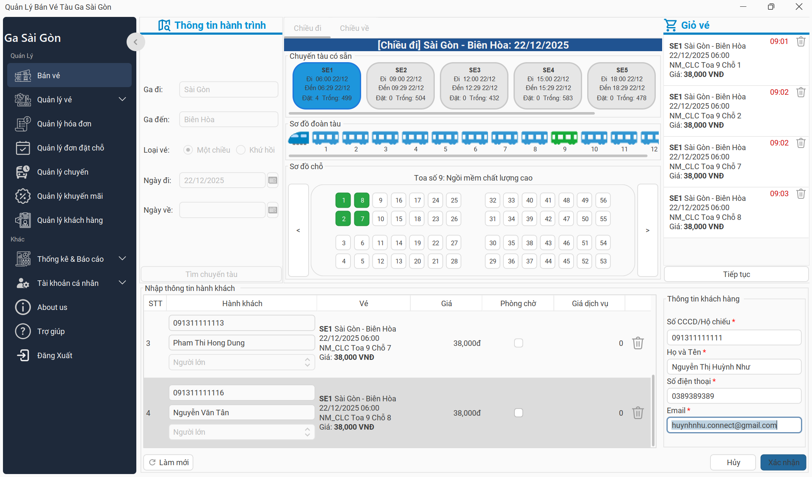
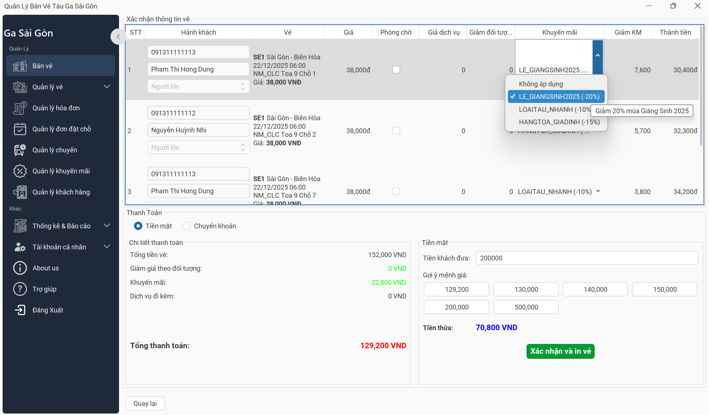

Quy trình Bán Vé
Chức năng dành cho Nhân viên quầy vé (NVQV), được chia thành 2 giai đoạn chính để đảm bảo thao tác nhanh và chính
xác.
Giai đoạn 1: Lập vé & Nhập thông tin

Hình 1: Giao diện Lập vé (Tìm kiếm - Chọn chỗ - Thông tin khách)
Bước 1: Tìm kiếm chuyến tàu
Nhập Ga đi, Ga đến, Loại vé (Một chiều/Khứ hồi), Ngày đi vào khung tìm kiếm bên trái và nhấn nút
Tìm kiếm.
Bước 2: Chọn vị trí ghế/giường
- Chọn chuyến tàu phù hợp từ danh sách kết quả.
- Chọn Toa tàu trên sơ đồ đoàn tàu.
- Chọn Ghế/Giường trống trên sơ đồ chi tiết (Ghế màu trắng là ghế trống).
Bước 3: Nhập thông tin hành khách
Tại bảng danh sách vé bên phải, với mỗi dòng vé đã chọn, NVQV cần nhập:
- Số giấy tờ (CCCD/CMND), Họ tên.
- Chọn đối tượng (Người lớn/Trẻ em/Người cao tuổi).
- Tích chọn Phòng chờ VIP (nếu khách có nhu cầu tại Ga Sài Gòn).
Lưu ý: Nhập thông tin người mua vé (SĐT, Email) ở phần cuối bảng để nhận hóa đơn điện tử.
Bước 4: Chuyển giai đoạn
Sau khi điền đủ thông tin, nhấn nút Tiếp tục để sang bước thanh toán.
Giai đoạn 2: Hoàn tất & Thanh toán

Hình 2: Giao diện Xác nhận & Thanh toán
Bước 5: Áp dụng khuyến mãi
Tại màn hình xác nhận, kiểm tra lại thông tin vé. Tại cột "Khuyến mãi", chọn các mã giảm giá khả dụng từ
danh sách (Combobox). Hệ thống sẽ tự động trừ tiền và cập nhật cột "Thành tiền".
Bước 6: Thanh toán
- Tiền mặt: Thu tiền và xác nhận trên hệ thống.
- Chuyển khoản (QR): Chọn phương thức chuyển khoản. Hệ thống hiển thị mã QR.
(Hệ thống tự động xác nhận giao dịch qua Casso khi khách chuyển khoản thành công).
Bước 7: Xuất vé
Sau khi thông báo "Bán vé thành công" hiện ra, nhấn Hoàn tất để in vé và kết
thúc giao dịch.
Xử lý sự cố: Nếu hệ thống báo "Không tìm thấy chuyến tàu" ở Bước 1, vui lòng kiểm tra lại ngày đi hoặc
gợi ý khách hàng chọn ngày khác.